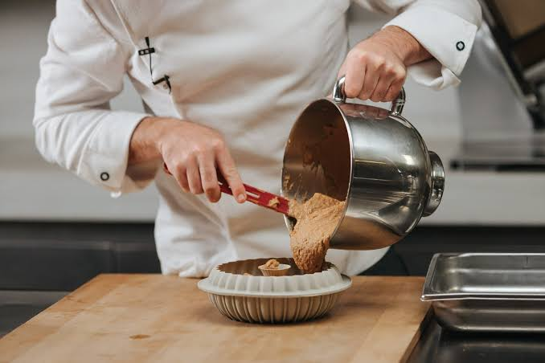
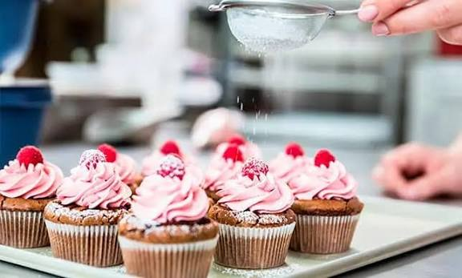

¿Qué es la repostería?
La repostería es una de las ramas más hermosas de la gastronomía que se especializa en la preparación, cocción y decoración de platos dulces como tortas, galletas y cremas. Sin embargo, definirla solo por sus ingredientes es quedarse en la superficie: la repostería es, en su esencia más profunda, la ciencia exacta de transformar alimentos simples en afecto, tradición y recuerdos felices. Es una disciplina donde la rigidez de una balanza se fusiona perfectamente con la calidez de un abrazo, convirtiendo el acto de hornear en una forma de arte vivo y emocional.
Nuestro Recetario



